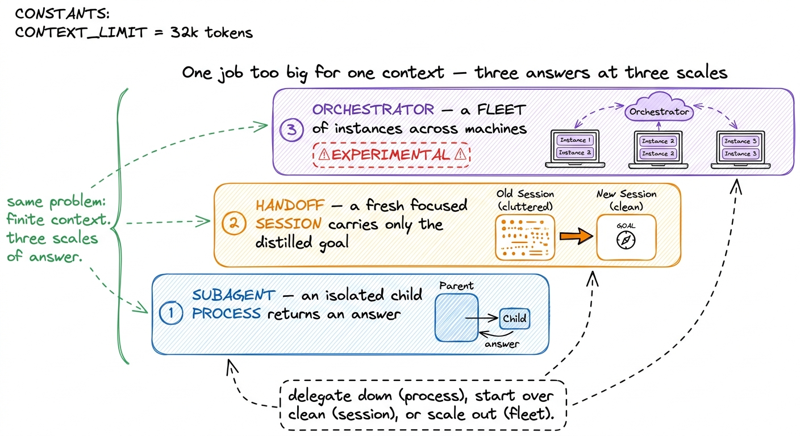
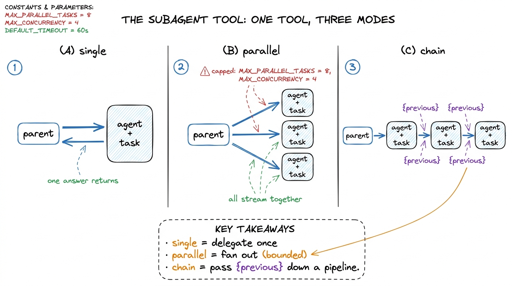
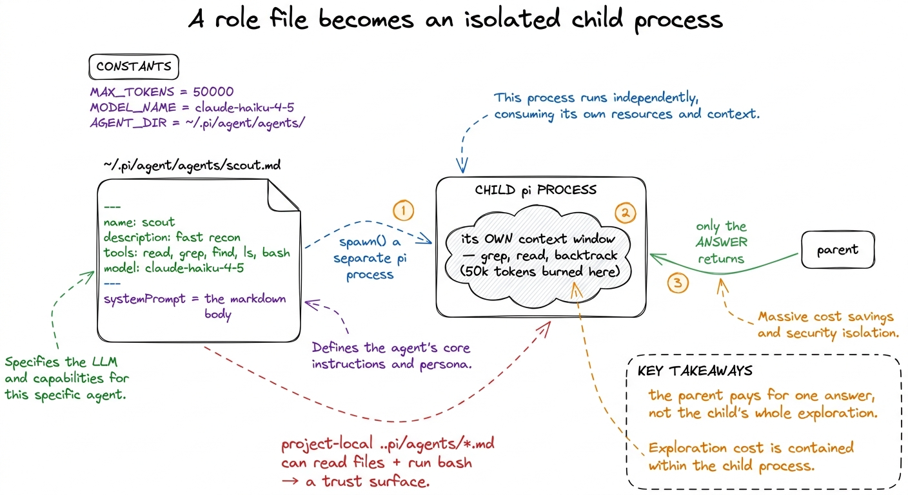
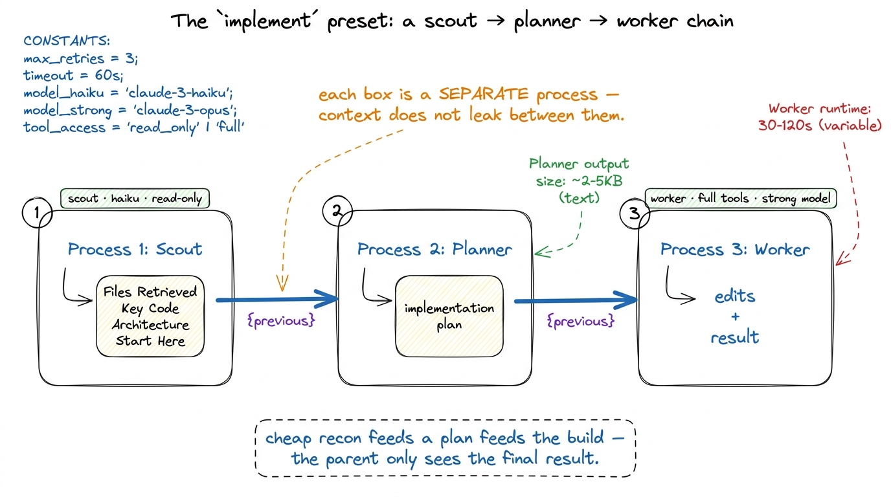
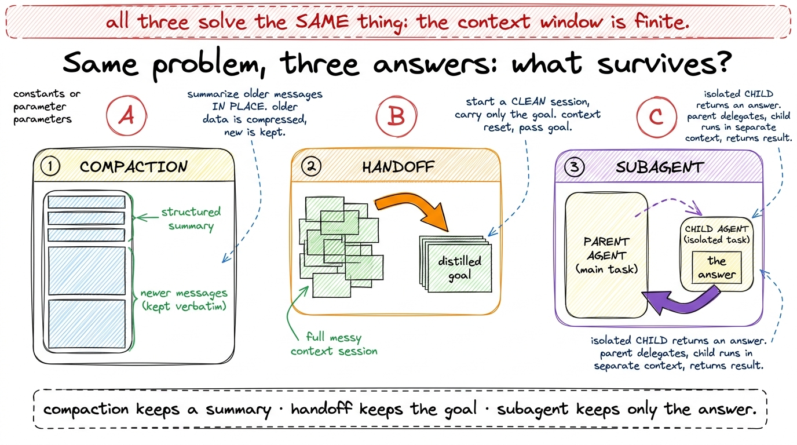
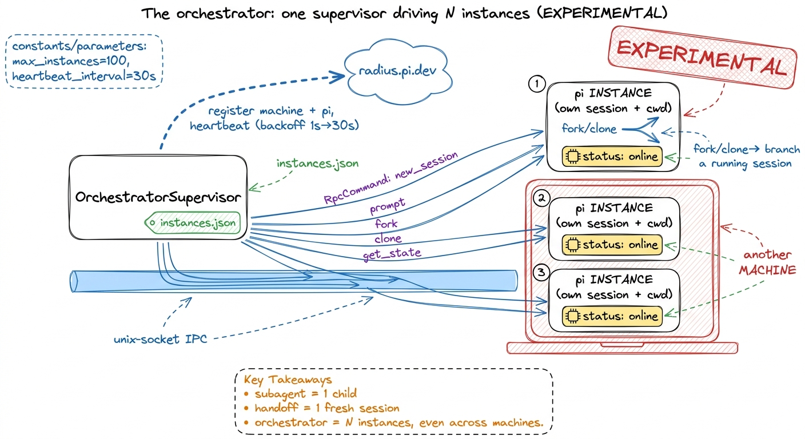

How Pi does subagents: three mechanisms, three scales DEEP
There is a moment in every long agent run where the job stops fitting. The context window is a fixed jar, and the task — "refactor this module, then review it, then fix the review" — keeps pouring in more than the jar holds: files read, tool outputs, dead ends, half-finished plans. The naive instinct is to make the jar bigger. You can't; it's fixed by the model. The real question is architectural: when one job is too big for one context, where does the overflow go?
One familiar answer is an explorer/executor split reached through a Task tool — and it's a good answer. But it's one rung of a ladder. Pi shows the whole ladder. It has not one delegation feature but three distinct mechanisms, at three different scales, and the clarifying move is to see them as three answers to the same question. A child process. A fresh thread. A fleet of machines. Let me walk you up all three.

figure rendering · The three answers, bottom to top: a subagent is an isolated child procRung one: the subagent extension, isolation by process
Start with the rung you already half-know. In Pi, delegation-within-a-task is an extension — a TypeScript module that registers a single tool via pi.registerTool({ name: "subagent", ... }).1 It lives in packages/coding-agent/examples/extensions/subagent/. That it is an example extension, not core, is itself the point of the whole section: Pi keeps a small MIT core and lets policy like this live in swappable modules. One tool, three modes, and the mode is chosen by which parameter the model fills in:
single—{ agent, task }. Delegate one task to one named role.parallel—{ tasks: [{agent, task}, ...] }. Run several concurrently. The array is capped atMAX_PARALLEL_TASKS = 8, and Pi runs at mostMAX_CONCURRENCY = 4at a time.chain—{ chain: [{agent, task}, ...] }. Run them in sequence, and — this is the clever part — each step's task string can contain a{previous}placeholder that Pi replaces with the prior step's output before dispatching.

figure rendering · The subagent tool's three modes: single delegates once, parallel fansNow the mechanism that makes any of this worth doing. Watch what happens on a single invocation. Pi does not clone the parent's message array or trim it cleverly. It calls spawn from node:child_process and launches a completely separate pi process — a real subprocess, running in JSON mode (--mode json -p --no-session), with the role's system prompt appended and the role's tool subset and model passed as flags.2 The exact invocation, from runSingleAgent in index.ts: ["--mode", "json", "-p", "--no-session"], then --model and --tools if the role specifies them, then --append-system-prompt pointing at a temp file holding the role's prompt, then Task: <task>. The role's prompt is written to a 0o600 temp file and deleted afterward. That child gets its own context window — its own process, its own message history, isolated from the parent's entirely. When it finishes, the only thing that comes back to the parent is its final answer.
That is the whole trick, and it's worth saying plainly: isolation is by process, not by clever message-trimming. The child can burn fifty thousand tokens grepping, reading, and backtracking through the codebase; the parent never sees a byte of that churn. It sees one compressed result. This is why delegation saves the parent's context — not because Pi summarizes the child's work, but because the child's work happened in a different jar.

figure rendering · A role's markdown file is spawned as a separate pi subprocess with itsRoles are markdown files
Where do roles like scout come from? They are markdown files with YAML frontmatter, discovered by discoverAgents(cwd, scope) from two places: ~/.pi/agent/agents/*.md (user scope) and .pi/agents/*.md (project scope, walking up to the nearest ancestor directory that has one). The frontmatter is small — { name, description, tools, model } — and the markdown body becomes the role's systemPrompt. The tools field is a comma list that gets parsed into a subset, so a role can be handed fewer tools than the parent has.
Four roles ship as samples, and they are the explorer/executor idea generalized to arbitrary named jobs:
scout— fast recon. Read-only-ish tools (read, grep, find, ls, bash), the cheapclaude-haiku-4-5model, and a system prompt that forces it to return a compressed digest under fixed headings:## Files Retrieved(with exact line ranges),## Key Code,## Architecture,## Start Here. Its prompt even tells it: "Your output will be passed to an agent who has NOT seen the files you explored." That is a role designed to hand context to the next role without making it re-read anything.planner— turns findings into an implementation plan.worker— the general-purpose executor: full tools, a strong model.reviewer— code review.
The scout is the explorer (cheap, read-only, recon); the worker is the executor (strong, full-tools). But because a role is just a file that constrains its own model and tool set, you are not limited to two — you write a .md file per job.3 This is the same progressive-disclosure spirit as Pi's skills: capability described in a small file, loaded and constrained on demand. The difference is that a skill runs in the current context, while a subagent role runs in a separate one.
Streaming, aborting, and presets
The child speaks a JSON RPC stream on stdout; the parent parses it line by line (proc.stdout.on("data", ...), splitting on newlines) and forwards each tool call and message to the UI live — so you watch the subagent work in real time. In parallel mode the streams interleave and you see "3/5 done, 2 running." Per-agent usage — turns, tokens, cache reads/writes, cost, context — is tracked and shown. And abort is honest: a signal abort listener calls proc.kill("SIGTERM") (then SIGKILL after five seconds), so Ctrl+C in the parent actually kills the child subprocess.
The recipes are composable. Workflow presets live as prompt templates in ~/.pi/agent/prompts/*.md:
implement=scout → planner → worker, a chain that threads{previous}from recon into a plan into an implementation.scout-and-plan=scout → planner.implement-and-review=worker → reviewer → worker— build it, review it, fix what the review found.

figure rendering · The implement preset chains scout, planner, and worker as three separaOne safety note you must internalize. A subagent runs a real pi subprocess with real tools — it can read files and run bash. Project-local .pi/agents/*.md files are repo-controlled prompts, which means cloning a repo can hand you agent definitions someone else wrote. So Pi treats them as a trust surface: with agentScope set to project or both, it prompts for confirmation before running project-local agents ("Project agents are repo-controlled. Only continue for trusted repositories."). Tie that to your permission gates. Default scope is user precisely so nothing in a checked-out repo runs without you opting in.
Rung two: the handoff extension, a clean session
The subagent sends work out and gets an answer back. But sometimes the problem isn't a sub-task — it's that your own session has gotten too heavy. You've spent forty turns exploring, arguing with yourself, chasing a bug, and now you finally know what to do — but the context is full of the mess it took to get here.
Pi's handoff extension is the answer at this scale. /handoff <goal> extracts what actually matters from the current session branch and starts a new, focused thread carrying only the distilled goal and context — lossless in the sense that the intent survives, without the accumulated cruft. It is the deliberate alternative to compaction: when summarizing in place would still leave you dragging a heavy history, you start clean instead.
This is the cleanest way to hold the whole trio in your head — three answers to finite context, distinguished by what they preserve:

figure rendering · Compaction summarizes older messages in place; handoff starts a cleanRead that figure slowly, because the distinction is the whole lesson. All three fight the same enemy — a fixed context window — and they differ only in what they choose to keep. Compaction keeps a structured summary of the old turns in the same session. Handoff keeps the goal and throws the session away. A subagent keeps nothing of the child except its answer. Once you see them as one family, you'll reach for the right one instinctively: sub-task → subagent, stale-but-important session → handoff, merely-long session → let compaction run.
Rung three: the orchestrator, a fleet of instances
The top rung is the biggest scale, and I'll mark it clearly: the orchestrator package is experimental. Where a subagent is one child process and a handoff is one fresh session, the orchestrator manages many whole Pi instances at once — and, remarkably, across different machines.
The OrchestratorSupervisor runs a set of Pi instances, each a separate RPC subprocess with its own session and its own working directory, tracked in an instances.json with a real state machine — InstanceStatus is starting | online | stopping | stopped | error. The supervisor routes RpcCommands to instances over unix-socket IPC: new_session, switch_session, fork, clone, set_session_name, prompt, get_state. The fork and clone commands are the interesting ones — they branch a running session into a new instance, so you can split a live line of work into two and drive both.
And it reaches beyond one computer. Cross-machine presence goes through radius.pi.dev (DEFAULT_RADIUS_URL = "https://radius.pi.dev/"): the supervisor registers the machine, registers each Pi instance, then heartbeats with exponential backoff (base 1000 ms up to 30000 ms, dropping the registration after three consecutive NOT_FOUND responses). That heartbeat is how one orchestrator can see and drive Pi instances running on other machines.

figure rendering · The experimental orchestrator supervises many Pi instances — each itsThe ladder, and why it matters
Step back and the three rungs line up by scale, and by lifetime. A subagent is the smallest and most disposable: a child process that lives for one task and dies. A handoff is one level up: it retires a whole session and opens a fresh one for the same human, same goal. The orchestrator is the largest: durable, multi-session, multi-machine supervision — a control plane over many Pis.
The first rung is the right place to start, because the explorer/executor split is the load-bearing idea. But notice what Pi's ladder buys you that a single Task tool doesn't. The scout/worker roles are explorer/executor — except they're markdown files you can multiply into any roster, each with its own model and tool budget. And above them sit two more answers the single-rung view doesn't even name: when the whole session is the problem, hand it off; when one machine is the problem, orchestrate a fleet.
So the next time a job stops fitting in one context, don't reach to make the jar bigger. Ask which rung you're on. Delegate a sub-task down to a child process. Start over clean with a handoff. Or, when you're ready to leave the experimental edge behind, scale out to a fleet. Same question, three answers — and now you know all three. Next, we look at how the supervisor coordinates work and plan mode once you're driving more than one agent at a time.